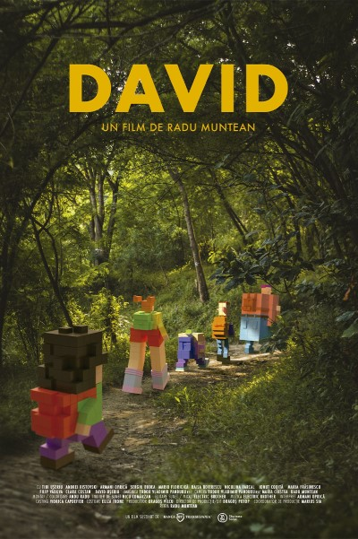
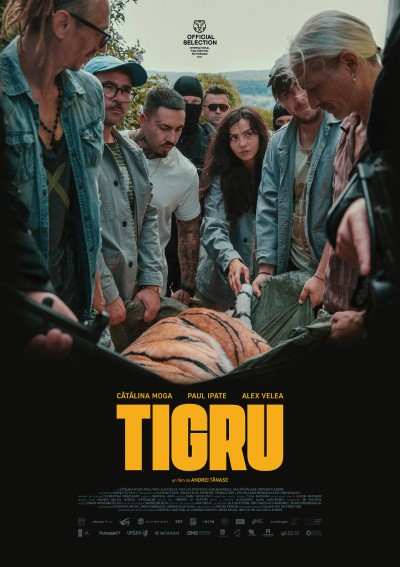

DAY 1 [joi, 13 iulie]
Rubik Hub | intrare liberă în limita locurilor disponibile | [CUMPĂRĂ ABONAMENT]
17:00-18:30 Festival Talk #1: Tibi Ușeriu, Alin Ușeriu, Voicu Bojan | discuție despre documentarul David cu protagonistul Tibi Ușeriu | lansare de carte Via Transilvanica - drumul care unește | sesiune de autografe
Curtea Domnească | intrare liberă în limita locurilor disponibile
20:00-21:00 Concert: Fără Zahăr
Fără Zahăr este o trupă de muzică și umor, abordând mai multe genuri muzicale pe
versuri comice, de satiră socială. Membrii ei fondatori sunt Bobi Dumitraș și Bobo
Burlăcianu, originari din Dorohoi, jud. Botoșani. În cântecele lor, formația combină
caracteristicile de hip-hop, (Sandu, Lav-stori), folk, (D'la munte, O, cal frumos),
latino (Stella), punk rock (The MF Song, Zob da club) și metal (Dunitru, Diesel).
21:00-21:30 Festival Start: aflăm ce bunătăți ne-aduce ediția aniversară, ce invitați avem, cum sărbătorim!
21:30-00:00 Film în avanpremieră: DAVID | regia Radu Muntean | 1h50m | invitați
speciali: Tibi Ușeriu, protagonist & Andu Radu, monteur 
Împreună cu 10 copii, dintre care unii n-au călcat până atunci decât pe asfalt, Tibi
Ușeriu creează "Drumul lui David", un traseu dedicat familiilor care vor să-și
încerce abilitățile de supraviețuire și orientare în natură.
Documentarul redă
tabăra de vară care a dus la acest itinerariu, cu peripeții de tot felul, cu umor și
spirit de echipă.
00:00-01:00 Film în premieră: Gazele din Marea Neagră: cum au reușit | regia Andrei
Dăscălescu | 46min
Documentarul urmărește construcția spectaculoasă a primului proiect de
infrastructură de producție a gazului natural din Marea Neagră, din ultimii 30 de
ani, cu provocările aduse de complexitatea proiectului, dar și de pandemie și
război.

DAY 2 [vineri, 14 iulie]
Rubik Hub | intrare liberă în limita locurilor disponibile | [CUMPĂRĂ ABONAMENT]
12:00-13:00 Festival Talk #2: Radu Păltineanu | discuție despre călătoriile epice ale aventurierului pietrean: traversarea Americilor, a Noii Zeelande și Australiei, escaladarea celor mai înalți vulcani de pe cele 7 continente.
13:30-14:30 Festival Talk #3: Andu Radu & Bogdan George Apetri | Andu este monteur și colorist, lucrând la multe dintre cele mai cunoscute filme românești ale ultimilor ani, dar și la numeroase producții internaționale | Bogdan este profesor de regie la Columbia University din New York și regizor al lungmetrajelor Periferic, Neidentificat și Miracol, toate trei proiectate la Filmul de Piatra.
Cinema Mon Amour | intrare liberă în limita locurilor disponibile | [CUMPĂRĂ ABONAMENT]
16:30-19:00 COMPETIȚIE #1 | discuție cu autorii scurtmetrajelor | premiul publicului
Medeia | regia Cristian Dorobanțu | Ficțiune | 12m32s
Hanna & Flóra | regia Márton Nagy | Ficțiune | 25m
Spre casă | regia Horațiu Curuțiu | Ficțiune | 14m34s
Oprește-te! Termină! Încetează! | regia Eugen Munteanu | Animație | 4m53s
Mai lasă-mă 5 minute | regia Alberto Niculae | Ficțiune | 13m35s
Morții cu morții, viii cu viii | regia Maria Giurgea | Ficțiune | 16m42s
Amintiri din tranziție | regia Marin Cumatrenco | Ficțiune | 18m14s
Nelu | regia Oana Bălțatu | Ficțiune | 17m
Suruaika | regia Vlad Ilicevici, Radu C Pop | Animație | 9m10s
Toate neamurile | regia Alexandra Maria Diaconu | Documentar | 22m23s
Baza Hipică | bilet în avans DAY 2: 45 lei | bilet la intrare: 60 lei | abonament FdP#15: 100 lei | intrarea copiilor de până la 12 ani (însoțiți de părinți) este gratuită
16:00-20:00 Activități pentru copii organizate de Fundația Autonom, AER, Bibliopolis | Plimbări cu ponei și cai | Food trucks & bar | Cabină foto 360 de grade | alte activități faine
20:00-21:00 Concert: Trupa A.T.N. (Anii tinereții noastre)
Trupa A.T.N. (Anii Tinereții Noastre) s-a înființat în anul 1979, când cinci adolescenți
din
Dorohoi puneau
bazele trupei, axându-se pe muzică folk-rock. După succesul inițial, cu numeroase
concerte,
participări la
concursuri și festivaluri, trupa suferă modificări, adăugând membri noi și văzându-i pe
alții părăsind țara.
Compun piese îndrăgite precum Cristina, Soare, Nori, Naluca alba, Lumini, Umbra ta. În
2017,
trupa este
reanimată de Gabriel Dupu și atrage noi muzicieni, ajungând să adauge melodii noi la
vechiul
repertoriu.
21:30-22:00 Scurtmetraj: O noapte în Tokoriki | regia Roxana Stroe | cu: Cristian
Priboi,
Iulia Ciochină |
18m
Într-o discotecă improvizată numită „Tokoriki”, întregul sat sărbătorește majoratul
Geaninei. Iubitul ei și
Alin urmează să-i facă un cadou neașteptat, pe care nimeni nu-l va uita.
22:00-23:45 Film în avanpremieră: Încă două lozuri | regia Paul Negoescu | cu Dragoș
Bucur,
Dorian Boguță,
Alexandru Papadopol, Iulian Postelnicu | 1h25m | invitat special: Dorian Boguță, actor
în
rol principal
Sile iese din închisoare cu ideea să se îmbogățească minând criptomonede. Împreună cu
Dinel
și Pompiliu îl
cunosc pe Ionuț, premiantul județului, cu ajutorul căruia reușesc să mineze criptomonede
în
valoare de 6
milioane de euro pe care le stochează pe un stick USB. Dinel e responsabil de păstrarea
în
siguranță a
stick-ului, dar reușește să-l piardă foarte repede, așa că cei trei pornesc în căutarea
lui.

23:45-00:15 Scurtmetraj: Adev despre trecut | regia Vlad Marina, Cristian Eduard Drăgan
|
25m
Un material “educativ” în trei părți, care documentează fapte culturale ale oamenilor
din
preistoria online.
Generat de o entitate AI sassy dintr-un viitor nedeterminat, filmul pornește de la trei
ciocniri televizate,
având în centru muzica, pentru a spune povestea mai largă a contextului lor și a-și
distra,
de ce nu,
publicul.
00:15-01:15 Concert: Șuie Paparude
Șuie Paparude a fost înființată în 1992. În toamna anului 1993 are loc lansarea oficială
a
trupei, având 5
membri și abordând un stil alternative-new-wave. În 1995, lansează primul album,
intitulat
"Șuie Paparude".
Formația a cântat în deschiderea unor concerte cu trupe apreciate internațional, cum ar
fi
Depeche Mode. În
cei 31 de la înființare, Șuie Paparude lansează 8 albume și nenumărate piese îndrăgite:
Nu
te mai saturi de
noi, Soundcheck, Mergem mai departe, Omul de gheață.
01:15-03:00 Retro Disco Party cu Dj Alpha & Cosmo
Dansează, cântă, fă-ți de cap și Blame it on the boogie.
DAY 3 [sâmbătă, 15 iulie]
Rubik Hub | intrare liberă în limita locurilor disponibile | [CUMPĂRĂ ABONAMENT]
12:00-13:00 Festival Talk #4: Dorian Boguță & Andrei Tănase | Dorian e unul dintre cei mai cunoscuți actori români contemporani, care a jucat în peste 30 de filme; e co-fondator al școlii de actorie actoriedefilm.ro și producător și protagonist al filmului Încă două lozuri, continuarea comediei de succes Două lozuri | Andrei e autorul unora dintre cele mai îndrăgite scurtmetraje românești proiectate la Filmul de Piatra, iar acum revine cu debutul său în lungmetraj, Tigru, pe care îl vom urmări sâmbătă seara.
13:30-14:30 Festival Talk #5: Roxana Stroe & Bogdan Tulbure | Roxana e cunoscută pentru regia scurtmetrajul O noapte în Tokoriki (2016), care a fost proiectat în peste 100 de festivaluri din toată lumea, inclusiv Berlin, San Sebastian, Karlovy Vary; noul ei scurt-metraj, Appalachia, poate fi urmărit sâmbătă seara, la Filmul de Piatra | Bogdan are 24 de ani și e actor în Tigru, acesta fiind primul lui rol major într-o producție de film.
Cinema Mon Amour | intrare liberă în limita locurilor disponibile | [CUMPĂRĂ ABONAMENT]
15:00-16:15 Film în avanpremieră: Călătoria mea în România. Scrisoare din Timișoara | regia Florin Iepan | 62m | invitat special: Daniel Mitulescu, producător
Cristian este nepotul celebrului ziarist și scriitor Jahn Otto Johansen, care în anii 80 a făcut o călătorie în România și a scris o carte despre țara noastră. Filmul urmărește prima călătorie a lui Cristian în Timișoara, pe urmele bunicului său. El încearcă să înțeleagă interacțiunea și contribuția la viața socială, politică, economică și culturală din prezent a principalelor etnii din actuala capitală culturală europeană.
16:30-19:00 COMPETIȚIE #2 | discuție cu autorii scurtmetrajelor | premiul publicului
Berliner Kindl | regia Lucia Chicoș | Ficțiune | 20m
Cântece din curtea din spate | regia Letiția Popa | Documentar | 14m49s
RiGLA | regia Alex Halka | Animație | 9m10s
Going forward, looking back | regia Vlad Dragne | Ficțiune | 7m23s
Ore frumoase (Kedves órák) | regia Orsolya Orban | Ficțiune | 30m
Noaptea de vineri a Milenei | regia Petra Torsan | Ficțiune | 19m5s
Casa noastră | regia Bogdan Alecsandru | Ficțiune | 14m
Exercițiu de concediu | regia Lara Ionescu | Ficțiune | 21m48s
Baza Hipică | bilet în avans DAY 3: 45 lei | bilet în locație: 60 lei | abonament FdP#15: 100 lei | intrarea copiilor de până la 12 ani (însoțiți de părinți) este gratuită
16:00-20:00 Activități pentru copii organizate de Fundația Autonom, AER, Bibliopolis | Plimbări cu ponei și cai | Food trucks & bar | Cabină foto 360 de grade | alte activități faine
20:00-21:00 Concert Adam’s Nest
Adam’s Nest a apărut în vara anului 2017 în Iași ca un duo alternative-acustic. În
aprilie
2018, după
lansarea EP-ului eponim, formația a prins contur, a adunat membri noi, și a început
să-și
facă prezența pe
scenele festivalurilor din țară. În vara lui 2020 trupa a lansat ”Irezistibil”, primul
album
full al trupei.
Adam’s Nest sunt Răzvan Nicolae Rusu (voce & chitară), Vlad Alui Gheorghe (chitară &
voce),
Gabriel
Belscescu (bass), Andrei Hâncu (tobe).
21:00-22:00 Concert & Visual Show: Silent Strike + Muse Quartet + Dan Basu
Silent Strike (Ioan Titu) e un compozitor român de muzică electronică și de film născut
în
1982. Munca lui
traversează multiple genuri muzicale, de la avant-garde jazz, la hip hop, lucru
reflectat în
discografia sa
(9 LPs & 8 EPs) din ultimii 15 ani, care include multe colaborări apreciate (Deliric,
CTC,
Tricky, EM, Ada
Milea).
Muse Quartet este cvartetul format din Alina Horez - vioara I, Nicoleta Petre - vioara II, Maria Colțatu - violă și Corina Ciuplea - violoncel. Nu țin cont de limite și își exercită talentul și capacitățile instrumentelor clasice și în alte genuri muzicale, prezentând noi nuanțe ale muzicii cinematice, pop si rock. S-au remarcat de-a lungul timpului prin varietatea playlist-ului concertelor lor, și a colaborărilor (Silent Strike, Deliric, CTC, Lucia, Byron).
Dan Basu (n.1983) este un artist din București, România. Repertoriul lui include
instalații,
fotografie,
desen, și lucrul cu porțelan. Dan acoperă o varietate largă de suprafețe cu texturi care
par
a curge și a se
preschimba din simboluri în asemie, sau în forme goale. Prin structurile și imaginile
abstracte, lucrările
lui exprimă gânduri și idei inefabile, preluând haosul și creând ordine și contraste
armonioase de culori.
22:00-22:30 Scurtmetraj: Appalachia | regia Roxana Stroe | cu Zea Duprez, Phenix
Brossard,
Costel Cașcaval |
28m | invitat special: Roxana Stroe, regizoare
Leo, un motociclist de 17 ani, și Raisa, fiica pastorului dintr-un mic sat conservator
din
România, se
îndrăgostesc la prima vedere, dar comunitarismul și fanatismul religios le vor învinge
relația.
22:30-00:00 Film în avanpremieră: Tigru | regia Andrei Tănase | cu Paul Ipate, Cătălina
Moga, Alex Velea,
Nicolae Cristache | 1h19m | invitați speciali: Andrei Tănase, regizor & Bogdan Tulbure,
actor

Vera e medic veterinar într-un mic și pitoresc oraș transilvănean. În ziua când un tigru
confiscat de la un
interlop local este adus la grădina zoologică unde lucrează, femeia descoperă un secret
care
o dă peste cap.
Tigri în carne şi oase au fost folosiţi pentru realizarea acestui lungmetraj de debut!
00:00-01:00 Concert Delta pe Obraz
Delta pe Obraz se naște în 2016, la Chișinău, când Gheorghe Gușan și Cristian Chirilă,
colegi la actorie,
încep să se joace cu poezii pe acorduri de chitară, oscilând sonor între poetry rock și
folk. În scurt timp
trupa se lărgește cu încă doi membri și începe să se facă remarcată în deschiderea
concertelor Fără Zahăr,
Gândul Mîței, Coma sau Luna Amară. Delta pe Obraz ne promit că în fiecare lună, în data
de
20, vor lansa
câte o piesă. Din povestea albumului “20” se desprind deocamdată Minte-i Frumos, Epitaf,
Nu
Mă Ating și
Fluturi.
01:00-02:00 Scurtmetraje Midnight Shorts
RiGLA | regia Alex Halka | 9m10s
Breath | regia Cătălin Rugină | 7m48s
.RAW | regia Dafina Bușu | 4m40s
Părfect | regia Răzvan Marinescu | 13m
Suruaika | regia Vlad Ilicevici, Radu C Pop | 9m10s
Hai să facem un homosexual | regia Răzvan Mihai Badea | 5m
02:00-03:00 Afterparty
DAY 4 [duminică, 16 iulie]
La Caiace bilet DAY 4: 30 lei | abonament FdP#15: 100 lei | intrarea copiilor de până la 12 ani (însoțiți de părinți) este gratuită
19:00-20:00 And the WINNERS are… | nu avem festivități, dar avem premii pentru regizorii filmelor din competiție!
20:00-21:00 Concert acustic COMA
COMA este o formație rock românească, înființată în anul 1999, în București, ca grup “nu
metal”, din
foști
membri ai trupelor Daft Allison si Ska Burger. Au lansat piese cunoscute precum Cel mai
frumos loc
de pe
pământ, Document, Chip, Coboara-ma-n Rai, Dor. COMA a cântat, de-a lungul timpului, în
deschiderea
concertelor unor trupe/artiști precum Linkin Park, Deftones, Sepultura, Ozzy Osbourne,
Slipknot,
Korn, The
Cure.
21:30-22:00 Scurtmetraj: Acolo unde bărcile nu ajung | regia Vlad Buzăianu | 18m
O furtună în familie și o furtună pe mare declanșează schimbări radicale în viața a doi
frați. Unul
descoperă lumea fantastică a copilăriei, în timp ce celălalt se luptă să o păstreze.
22:00-00:00 Film: Spre Nord | regia Mihai Mincan | cu Soliman Cruz, Niko Becker, Alexandre Nguyen | 2h03m | invitat special: Ramona Grama, producător executiv
1996, oceanul nesfârşit. În timpul turei sale la bordul unui transatlantic, Joel, un
marinar
filipinez
credincios, dă peste Dumitru, un pasager clandestin român ascuns într-un container.
Ştiind că
tânărul riscă
să fie aruncat peste bord dacă este descoperit de ofiţerii navei, Joel decide să-l
protejeze...